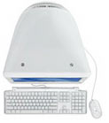
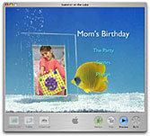
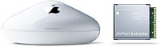
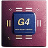

Take a good look at eMac. What’s not to like? All-in-one design, plug-and-play simplicity, great performance and an affordable price tag: Starting at just $799, you get everything you need to work, learn and play, right out of the box.
Have It All
With a new eMac, you get Mac OS X Tiger, the entire suite of iLife applications and a powerful G4 processor for a song. Speaking of songs, choose an eMac with the new SuperDrive and you’ll be burning up to 2100 of them (or up to 4 hours of MPEG-2 video) on a single double-layer DVD.

A Five-Star Lineup
Feeling creative? You don’t have to search very far to find the tools you need. Just open your Applications folder, where you’ll discover a true digital treasure trove: iTunes, iPhoto, iMovie HD, iDVD and GarageBand. Individually, the five iLife ’05 applications offer powerful yet easy-to-use options for purchasing and managing music, organizing digital photos, editing videos, creating your own top-ten tunes and authoring DVDs you can share with friends and family. But it’s when you use them together that iLife ’05 really shines, providing a suite of tightly-integrated tools that work together seamlessly and place no limits on your talent or creativity.
Options to Burn
Choices, choices. Maybe you prefer the $799 eMac with a Combo drive, which lets you read DVDs and read, write and burn CDs. Or perhaps you want to opt for the $999, 8x SuperDrive-equipped eMac, which gives you double-layer DVD burning support — doubling the disc storage capacity to 8.5GB over traditional, 4.7GB single-layer discs. Either way, you’ll find lots of ways to enjoy your all-in-one digital hub.
Take watching movies, for example. Both models play Hollywood’s finest movies on DVD, and the DVD Player, an application included with Mac OS X Tiger, is as easy to use as the remote controls on your living room remote. Both eMac models also allow you to burn CDs. In iTunes, for example, you can create your own playlists — “Music to Drive By,” “Gotta Dance,” “Late Nite Tunes” — and then burn audio or MP3 CDs to play in your car or home stereo. You can also burn data CDs — right from the desktop; that’s a simple way to back up important documents or share projects with colleagues at work.
Use the SuperDrive-equipped eMac to archive thousands of digital photographs with iPhoto on a single DVD. Or use iDVD to create your own Hollywood-style DVDs that combine your iMovie HD projects and iPhoto slideshows, both accompanied by iTunes playlists. The DVDs play in most consumer DVD players, so you can pop your DVD titles in the mail and share them with far-flung friends and relatives. And you can do it all in a snap: The SuperDrive in eMac burns single-layer DVDs at up to 8x speed and high-capacity, double-layer DVDs at up to 2.4x speed.
Get Connected.
Because the eMac ships AirPort Extreme-ready, you can put your new eMac anywhere in the house, not just where the phone jack or broadband connection happens to be.(1) Order eMac with an AirPort Extreme Card already installed, or install it yourself. Once installed, the AirPort Extreme Card lets you wirelessly connect to the Internet or communicate with other computers using an optional AirPort Express or AirPort Extreme Base Station. The AirPort Express Base Station even features AirTunes, allowing you to enjoy your iTunes music library in virtually any room of your house.
Order an eMac with the optional internal Bluetooth module installed, and you can use an Apple Wireless Keyboard and Mouse to work from up to 30 feet away without cables. Or wirelessly sync the contacts and phone numbers stored in your Mac OS X Address Book with a wide assortment of Bluetooth cell phones and PDAs. That’ll save you time.
In addition to AirPort Extreme and Bluetooth, you’ll also enjoy other top-of-the-line connectivity features. Every eMac comes with FireWire 400 and USB 2.0, making it easy to connect with a wide variety of peripherals, such as digital cameras, camcorders, printers, scanners and the new iPod mini. Both a Modem (56K v.92) and 100BASE-T Ethernet come built in, providing you with multiple options for communicating over the Internet. A Mini-VGA port lets you connect eMac to an external projector or TV set, a great option for presentations. And, thanks to the headphone jack, you can connect headphones or external speakers to eMac.
Affordable G4 Power
The impressive 1.42GHz PowerPC G4 processor provides all of the power you need. Whether you create complex Excel spreadsheets or large Keynote presentations, eMac won’t miss a beat. And you’ll really enjoy eMac’s performance when you’re scrolling through thousands of digital photos in iPhoto or applying transitions between clips in iMovie HD. In fact, thanks to the PowerPC G4 processor with Velocity Engine, eMac even lets you create DVDs with iDVD.
- Wireless Internet access requires AirPort or AirPort Extreme Base Station, AirPort Extreme Card and Internet access (fees may apply). Some Internet service providers are not currently compatible with AirPort. Range may vary with site conditions.
- Sold separately.